whiterun-progress.htmlТвой диагноз подтверждён прибором по земле движка (не по полю генератора): утоплены были 26 домов из 26, худшие — замок +1.63 м, мельница +1.23 м, таверна +0.56 м. После волны: 0 из 26 (зазор пола +0.08 м), фундаментная лента нигде не висит (0 из 26, вкоп до −0.29 м). Итог в боевой: 502 отрезка ленты + 15 крылец (подступёнок 15–20 см, проступь ровно 30 см), дорожки целятся в подножие лестницы. Бот прошёл осевую с заходом на крыльцо: 340 проб, ноль кадров вне земли.
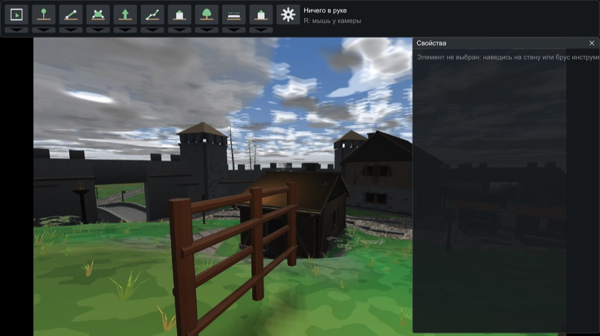
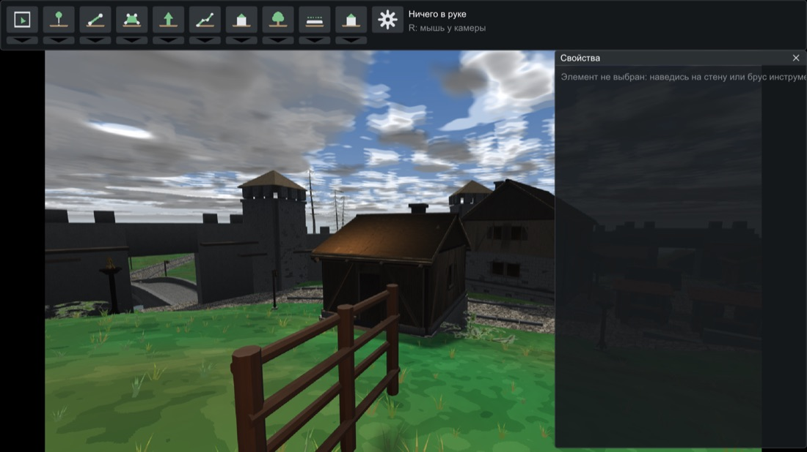
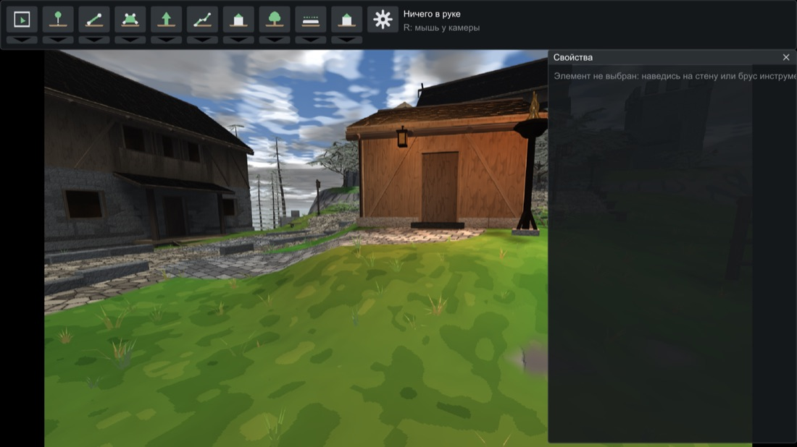
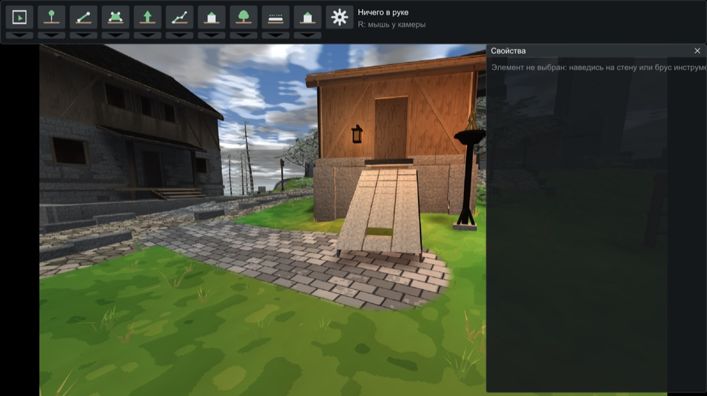
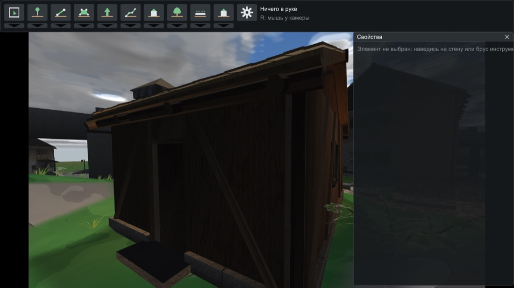
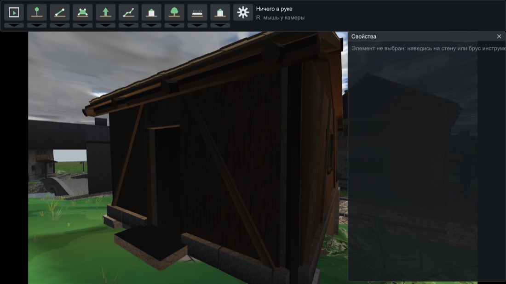
Попутно вскрыта вторая гниль: все дельты рельефа считались от снимка натуральной земли, который никто не обновлял — дрейф доходил до 0.48 м молча. Теперь свежий замер земли — первый пункт перегенерации, а старое правило «дом врезается до полуметра» вычеркнуто из docs/HOUSES.md твоими словами.
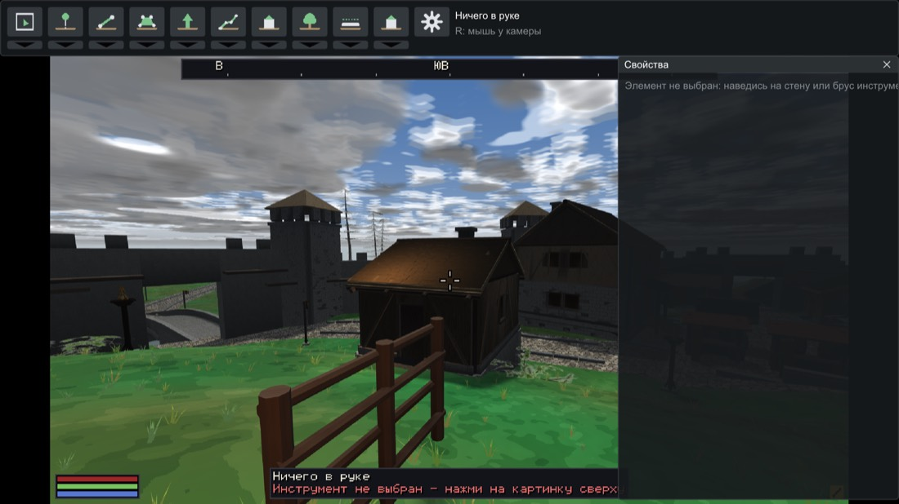
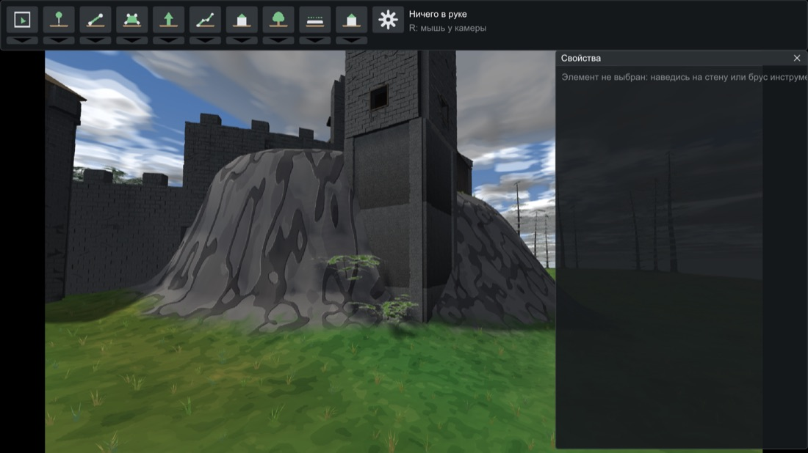
Четыре механизма, все за дозовыми дверями (откат бит-в-бит), 92/92 зелёные.
| Что болело (круг 6) | Механизм |
|---|---|
| «Фонарь не светит ни себе, ни столбу», «сбоку короб гаснет», «жаровня — чёрный столб при горящей чаше» | Изотропная составляющая: чистый NdL — модель дальнего света; вплотную к пламени поверхность ловит свет со всех сторон, ненаправленная доля растёт с мягкостью. Столбы, стволы и чаши у огня перестали быть чёрными. |
| «19 фонарей все бит-в-бит: ни джиттера радиуса, ни разброса температуры» | Лицо экземпляра: яркость ±15%, радиус ±10%, теплота сдвигом каналов — хэшем позиции (не рандомом: две сборки одной руки побайтово равны). Шесть типов держат характер. |
| «Ни фазы мерцания» — 13 жаровен горели как лампы накаливания | Мерцание (ключ flicker): жаровни 0.70, горн 0.60, очаги 0.50 дышат двумя несоизмеримыми частотами с фазой из позиции — соседние вразнобой; стёкла фонарей почти ровные. Заморозка часа замирает и мерцание — приёмки детерминированы. |
| «0 из 50 наружных источников с тенью» | Тень теперь просят открытые огни (жаровни, горн, огни площадей), а не стёкла — тень собственного короба мигала бы. Два слота кадра уходят ближайшим просящим. |
| «Газон ночью держит полную дневную зелень — единственное цветное пятно» (топ-2) | Скотопическая ночь: тёмное десатурируется к серому (палочки глаза не видят цвета), яркое — пламя, стёкла, пятна у огня — держит цвет. Без списка исключений по материалам. |
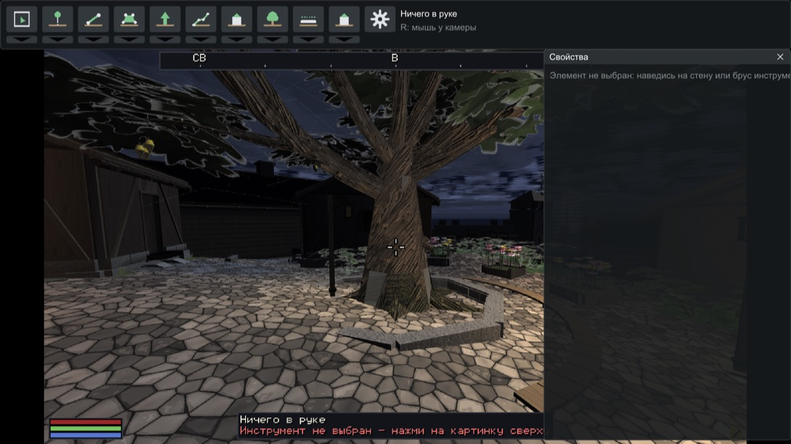
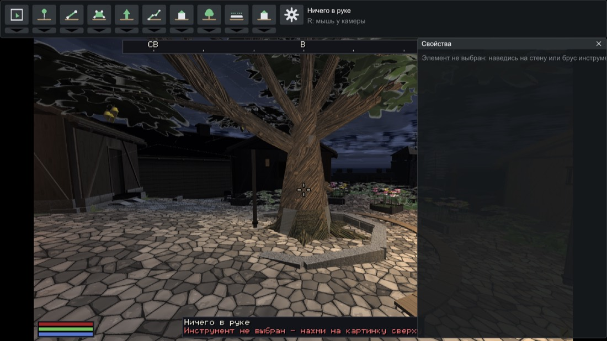
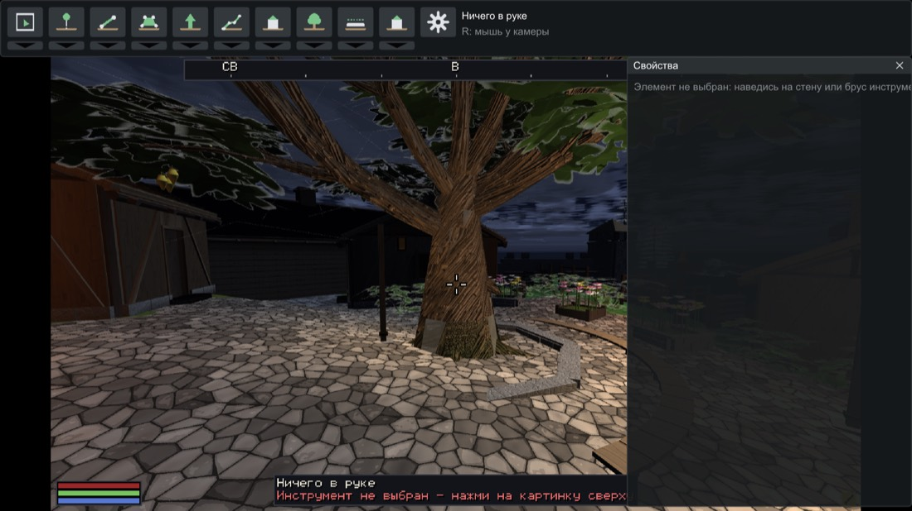
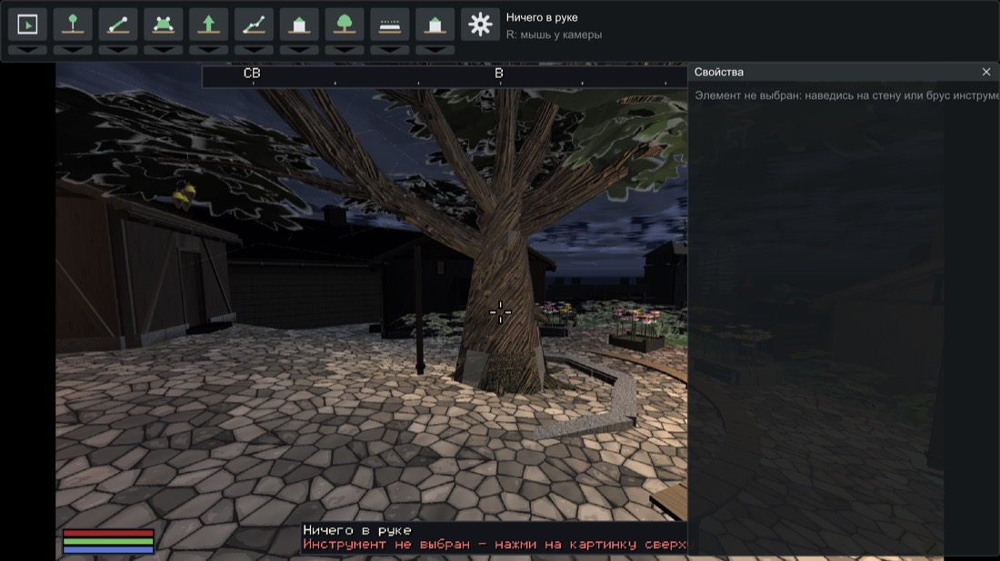
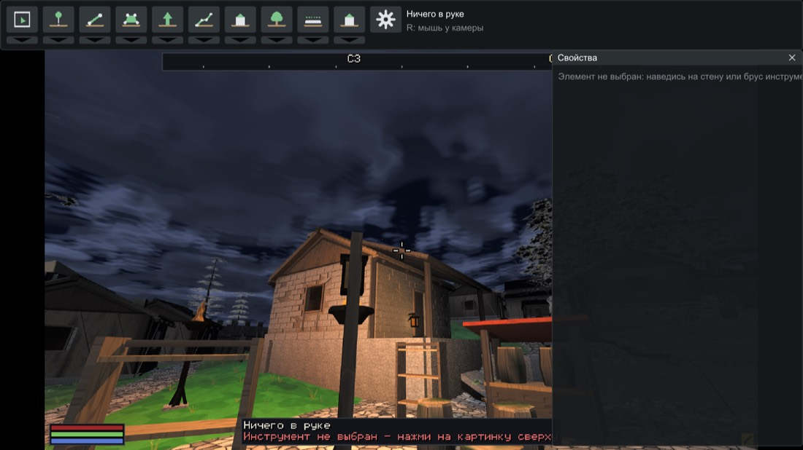
Осталось по свету, честно: светящиеся ночью окна и двусторонняя эмиссия стекла фонаря — обоим нужен механизм эмиссивных материалов построек (у вершин альфа занята запечённым AO); это следующий движковый заход. И облачная «крышка» с видимым полюсом над головой — отдельная небесная волна.
Корень: 1.8-метровая тропа на 2-метровой решётке вершин земли не разрешается по построению. Тропа теперь рисуется из фрагмента — растеризованная маска мира с шагом 25 см. Плюс городской нашёл баг единиц (третье число тропы писалось метрами, движок читал долей полуширины): ни у одной тропы не было плоской каменной вершины — мостовая растворялась дизером от осевой. Это и был «просвет зелени». Критик, та же поза и час: «решительная победа».
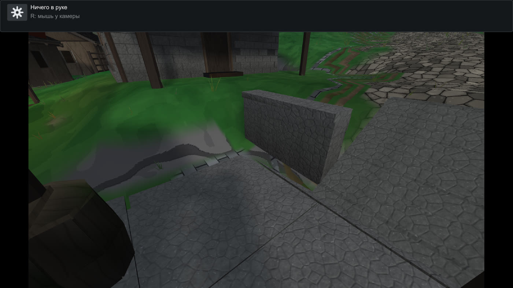
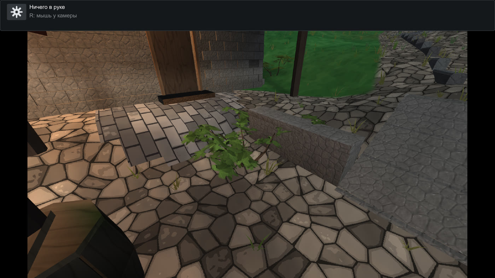
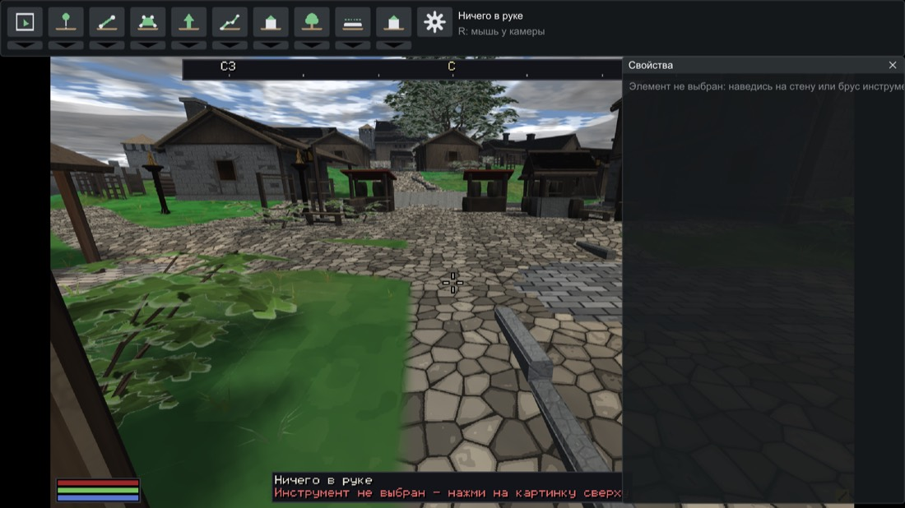
Счёт: 5 починено · 7 лучше · 14 без изменений · 4 регрессии. Закрыто из видимого: шевроны, чёрные клинья AO, просвет зелени, пластины рынка, растворение мостовой. Из девяти твоих замечаний 22.08 полностью закрыты 2/3/7, крепко сдвинуты 1/6/8; по 4/5/9 критик прав — сквер утоплен в газоне, точки притяжения из одной палитры, кустов мало.
| Боль | План |
|---|---|
| Город — это газон: 14 домов врозь на лугу, городской ткани нет | Эпоха уплотнения: дворы, заборы по делу, хозпостройки, замощение ядра — большая городская волна, спланирую с архитектором |
| Ночь не наступает (мостовая −57% — в цели, но булыжники читаются в 20 м от огня) | Скотопик уже смягчил; дальнейшее затемнение — после твоего взгляда на свежую ночь |
| Одна «обоина из петель» на штукатурке, обшивке, скале и грунте | Следующий движковый заход: развести мотивы проц-текстур по материалам |
| Сквер утоплен в траве, скамья невидима, цветы-«тарелки», Гилдергрин зелёный вместо розового | Городскому: поднять мощёный круг, расчистить траву; цветы — масштаб; розовая листва — ждёт твоего решения (перепекает атлас всех деревьев) |
| Фонарь-квад: горит одной гранью | Эмиссивные материалы построек (тот же заход, что светящиеся окна) |
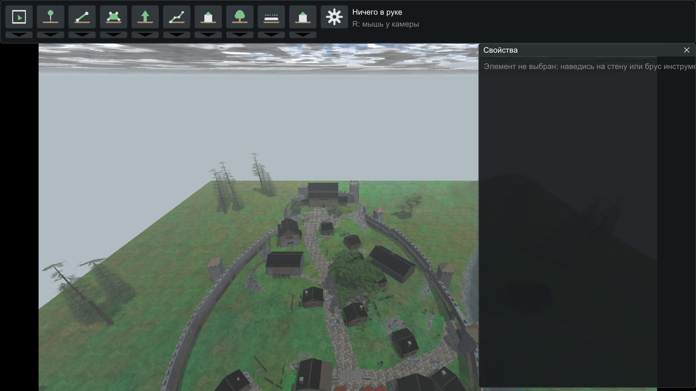
whiterun; девять проб агентов снесены, рабочим вписано правило убирать за собой.Коммиты волны: 00e67ce…3c7fbdd (запушены). Приёмка фундаментов с позами пар: docs/acceptance/whiterun-footings-23-08/. Кадры кругов: scratchpad критиков 5–6. Прошлый отчёт: whiterun-progress.html.